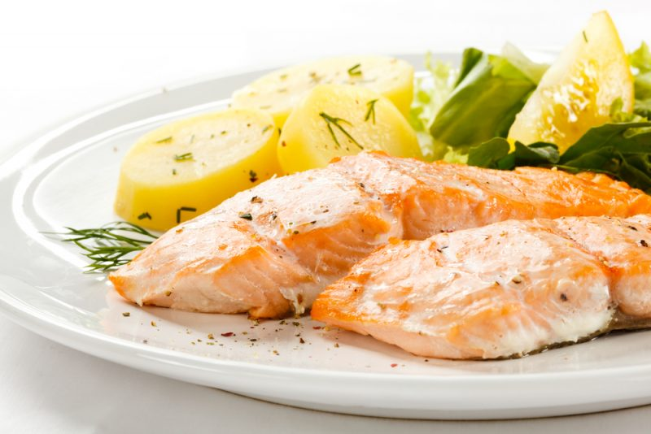
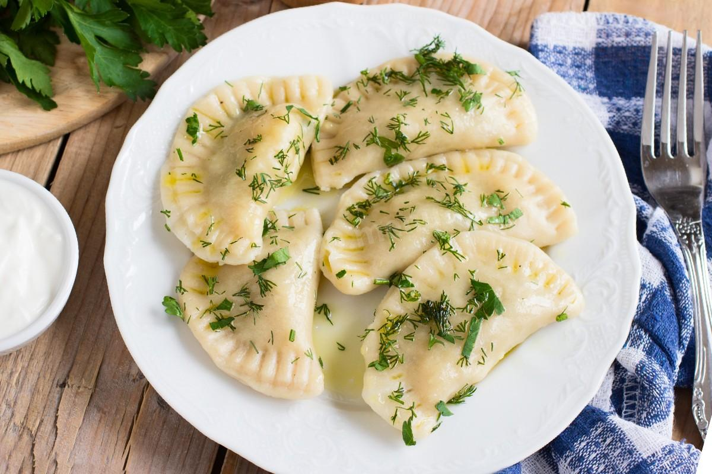

CARBONARA
Ingridients: špagety, slanina, olivový olej, parmezán, cesnak, vajcia, mleté čierne korenie, soľ
Špagety uvarte v osolenej vode, kým nie sú al dente - musíte ich variť asi o 2 minúty kratšie, ako je uvedené na obale.
Cesnak ošúpte a rozdrvte. Niekoľko minút opekajte na olivovom oleji, aby sa nasýtil vôňou cesnaku, a potom ho vyberte.
Slaninu nakrájajte na pásiky. Na olivovom oleji ich po cesnaku opečte dozlatista.
Oddeľte bielky od žĺtkov. Bielka nebudete potrebovať. Žĺtky vyšľahajte do hladka s mletým korením a soľou. Parmezán nastrúhajte na jemnom strúhadle a zmiešajte so žĺtkami. Ak je omáčka príliš hustá, pridajte malé množstvo tekutiny, v ktorej sa varili cestoviny. Omáčka by mala mať konzistenciu hustej kyslej smotany.
Špagety scedíme v cedníku a ihneď zmiešame s opečenou slaninou a vaječno-sýrovou omáčkou. Prísady rovnomerne premiešajte a cestoviny ihneď podávajte. Omáčka sa začne pripravovať z tepla horúcich cestovín. Niekedy sa na cestoviny pridáva surový vaječný žĺtok, ktorý špagety obalí.

UPEČENÝ SALMON
Ingridients: steak z lososa, soľ, mleté korenie, sušená bazalka
Rybu nakrájajte na kúsky (na steaky) a umyte. Každý kúsok treba osoliť, posypať korením a na 20 minút vložiť do chladničky. Po vychladnutí posypte bazalkou.
Rúru predhrejte na 180 stupňov.
Steaky zabalte do fólie, aby ste mohli porcie piecť samostatne.
Tácku, v ktorej sa bude losos skladovať, naplňte vodou do štvrtiny a potom do nej vložte steaky.
Steaky vložte do rúry a pečte približne pol hodiny. Aby sa na rybe vytvorila zlatistá kôrka, je potrebné rybu po 25 minútach vybrať a odstrániť fóliu. Nechajte piecť ďalších 10 minút odkryté.

PIROHY SO ZEMIAKMI
Ingridients: múky, kyslé mlieko, vajcia, soľ, sóda bikarbóna, zemiaky, cibuľa, soľ, čierne korenie, olej
Vajíčko a kyslé mlieko zmiešajte metličkou. Osolíme, pridáme lyžičku cukru a premiešame. Vsypte sódu bikarbónu a počkajte, kým sa nezačne tvoriť pena. Pridajte múku (je lepšie pridávať ju postupne, pretože možno budete potrebovať menej alebo viac).
Uhnetieme mäkké, nie lepivé cesto. Na stole ho dobre premiesime a v prípade potreby pridáme múku. Nemala by sa vám lepiť na ruky. Cesto prikryte utierkou a odložte bokom.
Príprava náplne. Ošúpte a uvarte zemiaky. Cibuľu nakrájajte nadrobno a osmažte na rastlinnom oleji. Zemiaky roztlačte a zmiešajte s opečenou cibuľou. Podľa chuti pridajte soľ a korenie.
Potom môžete cesto rozvaľkať na stole a vykrajovať kruhy pomocou pohára. Alebo z neho môžete urobiť klobásu a nakrájať ju na kúsky, ktoré potom zrolujete do placiek. Vytvarujte pirohy a opatrne zoštipnite okraje, aby sa počas varenia neotvorili.
Pirohy uvarte vo vriacej osolenej vode. Po uvarení ich varte asi 2 minúty. Pirohy podávajte so zemiakmi a cibuľou najlepšie s kyslou smotanou.
